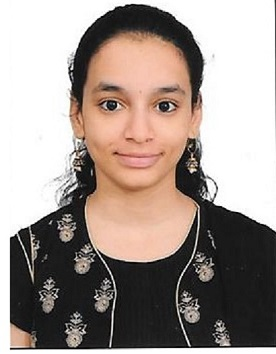

HAMSASHREE M
Student at Global Academy of Technology
Career Objective
To be an effective, result oriented achiever in every job assigned.To give my best in the process of
achieving my goal.
To be good team player and achieve team as well as individual goals
with my strengths, honesty, dedication and team work.
Academic Background
Bachelor Of Engineering in Computer Science And Engineering
GLOBAL ACADEMY OF TECHNOLOGY
Pre University | PCMCs
SRI KUMARANS CHILDREN'S HOME COMPOSITE PRE-UNIVERSITY COLLEGE
10th STATE Board
AUDEN PUBLIC HIGH SCHOOL
- 2015-2016
- Percentage:97.44
Work Experience
Projects
- DBMS Project on Cooking recipe portal
- Mobile Application Development Project on Medicine database
- Python project on contact book
- CG project on traffic signal simulator
Internship
- Full Stack Web Development At Thaniya Technologies Pvt ltd
Languages Known
Other Skills
Certifications
-
Marketing in a Digital Word University of illinois at Urbana-Champaign, Coursera.
- Time Management
- Leadership
- Team Player
- Good Listener
- Journaling
- Optimistic person
Interests and Hobbies
- Sports: Throw Ball Player
- Hobbies: Reading novels,Dance and Journaling
Extra Curricular activites
-
Participated in 5K Run at GAT, Run For Hunger which gave a
positive shift due to the cause bread for hunger.